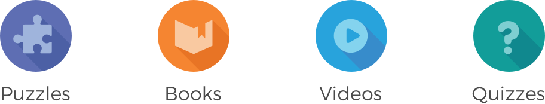

Kids magazine reimagined as an app
Highlights Every Day is a mobile app that offers a variety of challenging puzzles, captivating stories, fascinating videos, and amusing quizzes in a safe, digital environment for kids..
Highlights makes printed magazine for kids ages 6-12 that contain a myriad of well-known and well-loved activities designed to develop a child’s cognitive abilities as they’re growing. They have been in the business for over 70 years and were interested in transforming their product into something kids in the digital age could relate to. We were tasked with translating this experience into a mobile app.
I worked at Fingeprint Play at the time and built this with one other designer, our VP of design, engineers, content sourcers, and marketers, as well as input from the client, Highlights.
In order to understand what directions to explore, we needed to understand what our goals were for this product. This can be split into user goals and business goals.
Highlights also had print and digital competition in this space, so I spent some time taking a look at competitor’s solutions for digital. Some magazines had opted for a simple interactive e-book style, while others spent a little more time creating custom interfaces.
We had initially explored some ideas on how to deliver content in an interesting way to kids. The ideas revolved around the main concept of a calendar or daily content pack, which mimicked the Highlights subscription where kids would receive a new magazine every month.
We were surprised to find through user testing that kids didn’t understand the concept of a calender. Back to the drawing board. In our second brainstorm, the idea of a content “river” was born, which would give kids a way to quickly look for content they’re interested in. The advent calendar was changed to a present, something more familiar to kids.
Every day a kid returns to play Highlights Every Day, they receive 5 new activities in the form of a colorful mystery gift.
The home screen has activity filters on top and a horizontal scrolling area with activities that we interally dubbed the River. The River is the area where kids can launch activities they receive from gifts.
Highlights Every Day offers hundreds of educational and entertainment activities, which we’ve divided into four categories: puzzles, reading, videos, and quizzes.
This was a really interesting project that provided a lot of unique challenges. Kids in general are a completely different audience from adults, and we had to remember that even though we were kids once, it was nothing like growing up as a kid now. It was also tricky to balance an interface that felt too advanced or too young for kids. I especially loved figuring out how to convert in mass what was traditionally designed for print to digital, and I loved thinking of ways on how to enhance the interaction in ways print couldn’t.
Fingerprint Play continued to refine and improve this app after I left the company. Highlights Every Day is still available in the App Store and Google Play, but it has shifted and changed since I've worked on the mocks above.